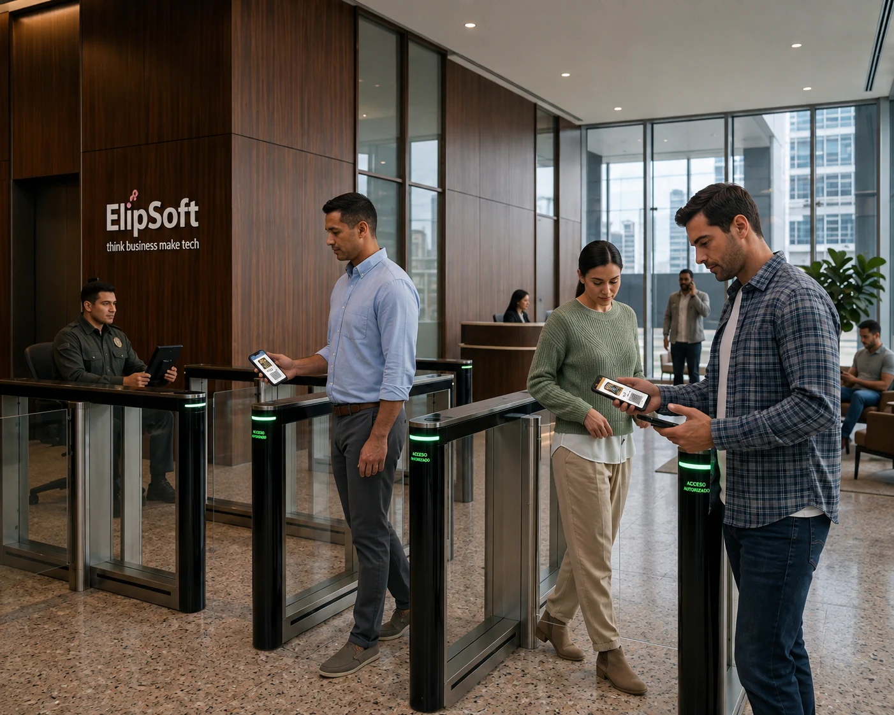

CONTROL DE ACCESO PARA COMUNIDADES
Resguarda tu tranquilidad y seguridad con NOCTA.
Una forma simple y moderna de gestionar quién entra, quién autoriza y qué ocurre en cada acceso.

ACCESO AUTORIZADO
Registro completado en segundos
ANTES DE LA ENTRADA
NOCTA no comienza en la garita.
Muchos problemas de control aparecen antes de que el visitante llegue: la información se dispersa, cambia de manos y termina siendo difícil de verificar.
Escena ficticia pendiente
Chat, documento ficticio e instrucciones dispersas.
UNA RUTA MÁS CLARA
NOCTA pone orden.
- 01Invitar
- 02Identificar
- 03Autorizar
- 04Verificar
- 05Registrar
ECOSISTEMA DE ACCESO
Cuatro roles. Un recorrido compartido.
Cada persona recibe la información que necesita para cumplir su función dentro del acceso.
NOCTA Resident
Autoriza.NOCTA Visit
Se identifica.NOCTA Guard
Verifica.NOCTA Admin
Supervisa.
DEMO PRINCIPAL
Así avanza un acceso con NOCTA.
Explora el recorrido desde la invitación inicial hasta el registro de la actividad.
RECORRIDO INTERACTIVO
Flujo de acceso
Resident invita
Desde NOCTA Resident se crea y comparte una invitación para la visita.
Momento del flujoInvitación creada
- Visita definida
- Información inicial preparada
- Enlace listo para compartir
Todo ocurrió en segundos. Todo quedó registrado.
NOCTA RESIDENT
La autorización comienza con quien recibe.
Resident permite crear invitaciones, aprobar visitas, consultar actividad y revocar accesos desde un punto claro. Cuando corresponde, también ayuda al residente a operar dentro del contexto correcto de su comunidad.
- Invitar y aprobar
- Consultar actividad
- Revocar accesos
Visual de Resident pendiente
Autoriza
Visual de Visit pendiente
Se identifica
NOCTA VISIT
El visitante completa el proceso desde su teléfono.
Recibe un enlace, completa la información requerida, espera la aprobación cuando corresponde y obtiene su pase.
Sin descargar una app.
NOCTA GUARD
En la entrada no hay tiempo para interpretar.
Guard presenta el resultado de la verificación de forma directa y permite asociar el QR con el registro y la bitácora del acceso.
Acceso no autorizado
Requiere verificación
Estados visuales de Guard pendientes
NOCTA Guard
Resultado de verificación
ACCESO AUTORIZADO
Visual de Admin pendiente
Supervisa
NOCTA ADMIN
Una visión central de la operación.
Admin reúne supervisión, actividad, trazabilidad y configuración en una misma perspectiva. Sus capacidades se incorporan por etapas para acompañar la operación real de cada comunidad.
ANTES / CON NOCTA
Del “déjalo pasar” a un acceso verificable.
- Chats
- Llamadas
- Cuadernos
- Fotografías dispersas
- Instrucciones verbales
- Información fragmentada
Comparación visual pendiente→
- Invitación
- Identificación
- Autorización
- Verificación
- Registro
- Trazabilidad
UNA CAPACIDAD COMPLEMENTARIA
Hasta aquí sabemos quién debería estar allí.
¿Pero qué está ocurriendo?
NOCTA VisionAhora NOCTA también puede ver.
NOCTA VISION
Entender lo que ocurre alrededor del acceso.
Control de acceso permite saber quién debería estar allí. NOCTA Vision ayuda a entender qué está ocurriendo.
Escenario: Entrada principal
Atención: Media
PERSONA
SEGURIDAD Y CONFIANZA
Diseñado alrededor de una operación clara.
La tecnología debe ayudar a que cada comunidad mantenga el control sin hacer más compleja la experiencia.
Funciones claras
Cada usuario opera según su responsabilidad.
Actividad relevante
Los eventos importantes quedan disponibles para seguimiento.
Operación por comunidad
Cada comunidad mantiene su propio contexto de operación.
Pensado para el día a día
El sistema se diseña para acompañar situaciones reales de acceso.
Continuidad importante
La operación debe contemplar momentos en los que la conectividad presenta problemas.

CONOCE NOCTA
Más tranquilidad, seguridad y control para toda la comunidad.
Una mejor experiencia para residentes, visitantes, seguridad y administración comienza con un acceso más claro.